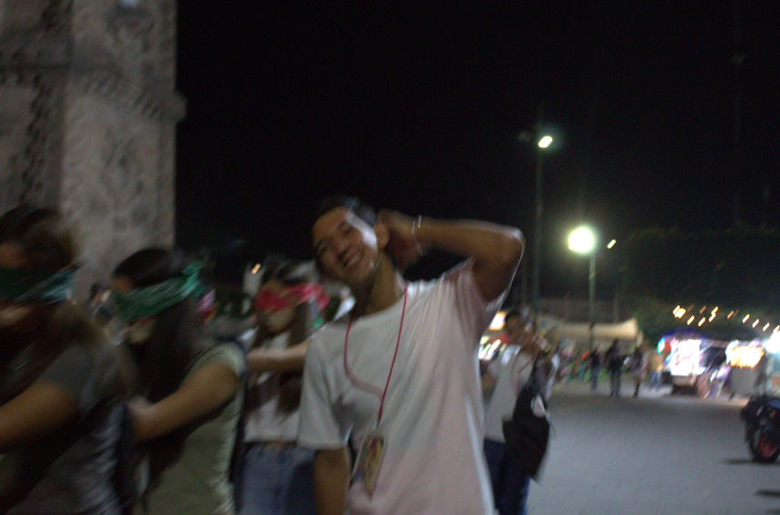

Hola, y si mi nombre completo es Pablo Moises Zuñiga Cruz, muchas personas me conocen como Crispa otras como Pablo y algunas otras como Moi.
Soy de Ocotlán Jalico México, lugar donde nací y he vivido toda mi vida tengo 17 años nací un 25 de julio de 2008.
Una de las cosas que más disfruto en la vida es compartir tiempo con mi familia y amigos, gozo mucho el poder hablar y expresarme con ellos.
Me gusta el inglés, de hecho ahorita tengo un nivel aproximado al B2 por lo cual me siento muy orgulloso. Me gusta el teatro y la actuación soy parte de un grupo de actores, grupo Carpio.
A los 4 años de edad entre al kinder "Juan Escutia" donde curse los dos años de prescolar. En el kinder fui parte de la escolta durante todo el ultimo año, participe en bailables y eventos por parte del kinder.
Cuando culmine la etapa del kinder comence en la primaria, primer y segúndo grado de primaria los curse en la primaria "Amado Nervo" también conocida como la "Mascota", al pasar al tercer grado de primaria mis papás tomaron la desición de cambiarme a la escuela primaria "Valentin Gomez Farias" en donde termine los otros 4 grados de primaria, cuando estaba en 6to grado de primaria llego la pandemia lo cual inpidio graduarme y hacer el primer año de secundaria.
Después entre a segundo de secundaria en la ETI 42 "Escuela Secundaria Tecnica No.42, en la que obtuve varios reconocimientos por mi desempeño en los estudios, lleve el taller de tecnico en Mecanica Automotris, fui parte de la escolta, y participe en varios eventos en los cuales mayormente como grupo e individual ganabamos primeros lugares. Me gradue con un promedio de 9.6.
Posteriormente comenze a estudiar en la media superior, la preparatoria CBTis 49"Centro de Bachillerato Tecnologíco industrial y de servicios No.49" en el cual actualmente curso la carrera de tecnico en programación, estoy en 5to semesre y hasta ahora soy capaz de utilizar MYSQL, Java, MongoDB, PSint, y ahora aprendo como usar HTML.

Contare rapidamente mis hobbies.
Me gusta mucho el inglés, la actuación y platicar con mis amigos.
Un dato curioso sobre mi es que no tengo un diente, asi que tengo uno postizo.
Mi proposito con este blog es que las personas conozcan un poco más fondo quién soy y aportar algo de mi a las personas que vean mi blog, para que se sientan motivados a hacer cosas en sus vidas.